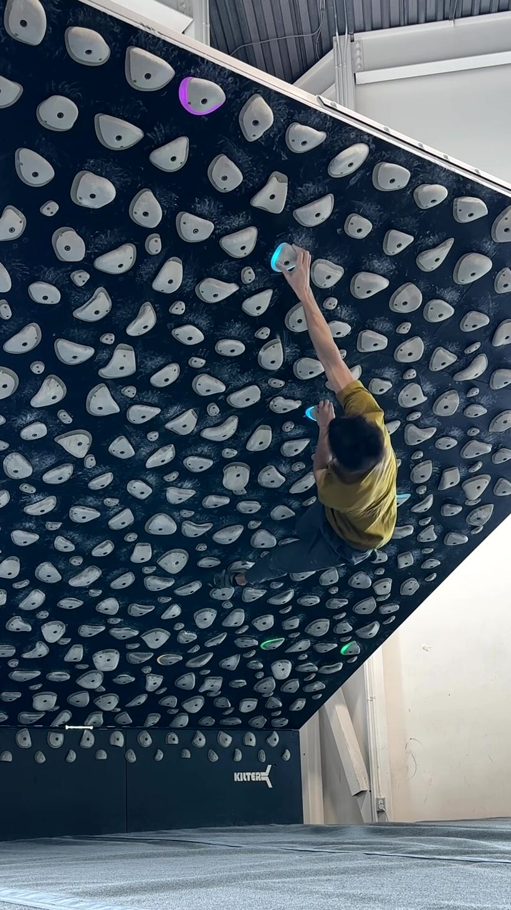
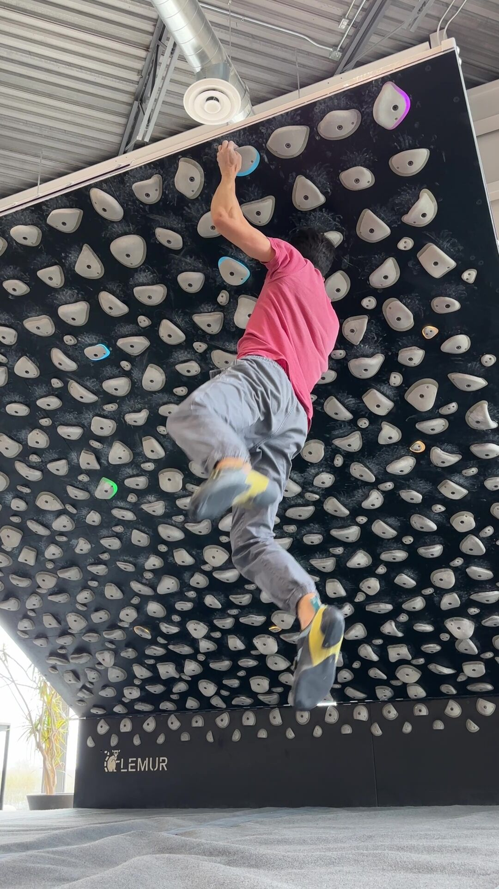

CROSS / ROSE
Reaching across your body to a hold on the opposite side, often crossing arms or twisting the torso.


A static cross move on "Flow10" V11 / 8a @ 60.
Cross | Static

A dynamic cross move on "Mommy's Genes" V10 / 7c+ @ 60.
Cross | DynamicTechnique Notes
Crossing involves reaching across your body to grab a hold on the opposite side. A "Rose" move is a specific variation where you cross *through* your arm, often releasing one hand to spin or re-adjust.
Key Considerations: Body tension is critical. If your feet cut, the swing can be massive. Try to flag or bicycle with your feet to prevent the barn-door effect.
Common Mistake: Over-gripping. People often squeeze too hard when crossing because it feels exposed, leading to premature pump. Trust your feet and stay relaxed.